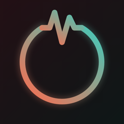

RestLess
Move a little. Live a lot.
RestLess is an Apple Watch app that notices when you've been still for too long and nudges you to get moving. It compares your heart rate with your own resting baseline instead of step counts or generic targets. When your heart rate rises after a nudge, that's how it knows you moved. There's nothing to log.
Why this works: the research behind RestLess. Why it exists: the story behind it.
Support
Questions, problems or ideas? Email support@restless.watch. RestLess is made by one person, so replies may take a day or two.
Common questions
Why are my Activity rings higher on session days?
A RestLess session runs as a workout-style session, because that's the only way an Apple Watch keeps reading heart rate reliably. Your Watch counts every session minute toward your Exercise ring and adds some calories to your Move ring, even while you sit still. RestLess never saves the session as a workout.
Why didn't the Workout app detect my walk?
Only one workout can run at a time, so the Workout app can't auto-detect walks or runs while a session is active. Stop RestLess before a walk you want tracked, and start it again afterwards.
I felt a vibration, but no notification appeared.
If RestLess is on screen when a nudge arrives, watchOS sometimes holds the banner back until later. The vibration is always on time. You'll still find the notification in Notification Centre.
Why didn't I get a "nice work" after moving?
RestLess waits for your heart rate to rise clearly above your resting baseline. A short shuffle may not be enough. A couple of minutes of brisk walking or a flight of stairs usually is.
Does a session use more battery?
Yes, more than a normal background app, because the heart-rate sensor keeps running. A full working day usually still leaves plenty of charge.
The biggest saving is turning off Always On. With it on, the display stays lit for the whole session. With it off, the screen goes dark when you lower your wrist, and RestLess keeps watching your heart rate as normal. On your Watch, go to Settings > Display & Brightness > Always On.
Can I use it while driving?
RestLess only looks at heart rate and can't tell when you're driving. Never respond to a nudge behind the wheel.
Is RestLess a medical device?
No. It's a wellbeing reminder, not a medical device, and it doesn't diagnose or treat anything.
Privacy
Your data stays on your Apple Watch. RestLess has no accounts, no servers, no analytics and no ads. Read the privacy policy.